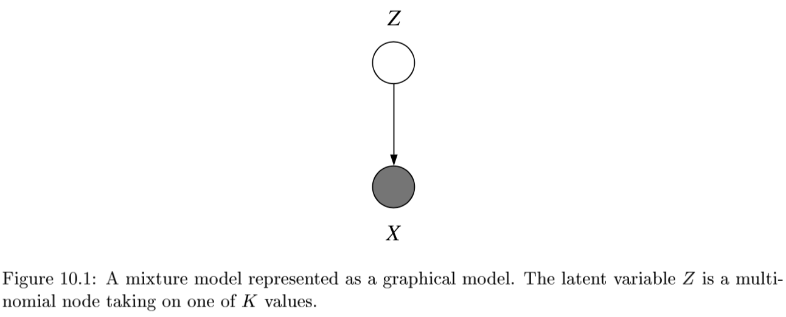
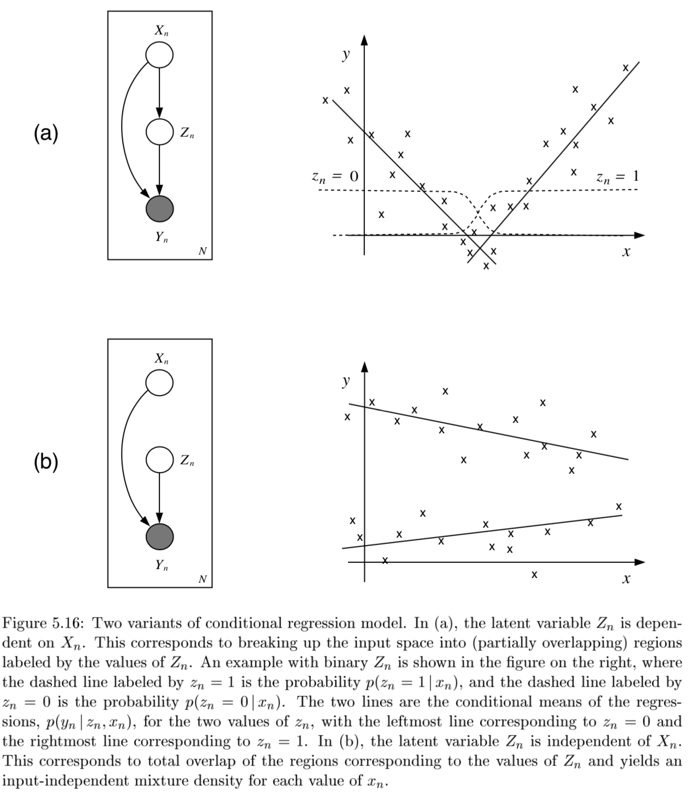
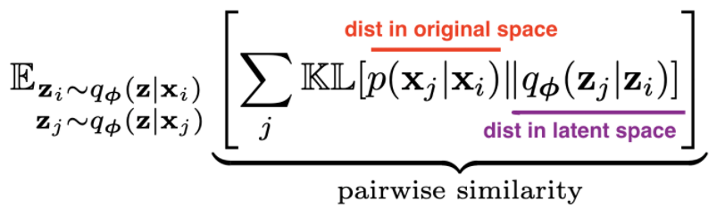
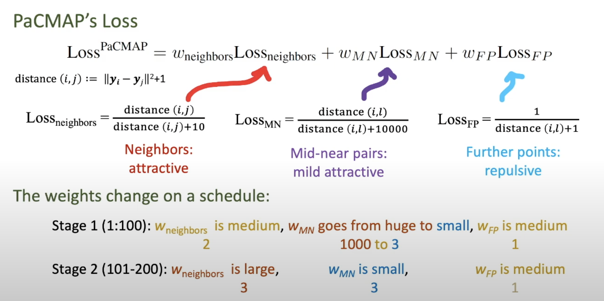
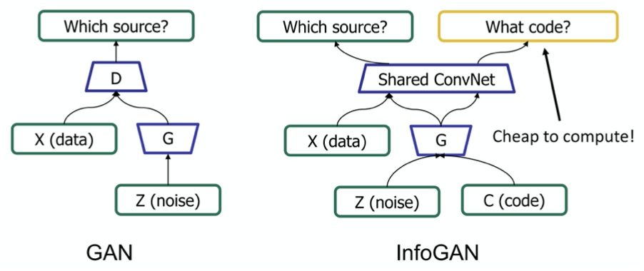
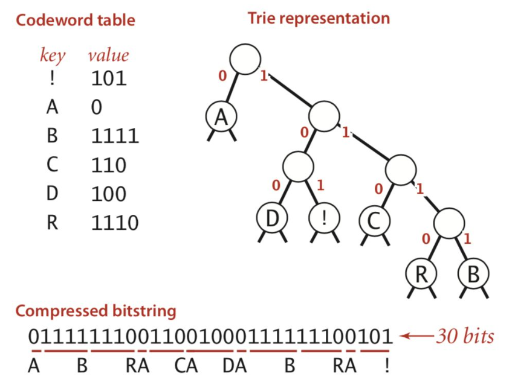

unsupervised
view markdownclustering
- labels are not given
- intra-cluster distances are minimized, inter-cluster distances are maximized
- distance measures
- symmetric D(A,B)=D(B,A)
- self-similarity D(A,A)=0
- positivity separation D(A,B)=0 iff A=B
- triangular inequality D(A,B) <= D(A,C)+D(B,C)
- ex. Minkowski Metrics $d(x,y)=\sqrt[r]{\sum \vert x_i-y_i\vert ^r}$
- r=1 Manhattan distance
- r=1 when y is binary -> Hamming distance
- r=2 Euclidean
- r=$\infty$ “sup” distance
- correlation coefficient - unit independent
- edit distance
hierarchical
- two approaches:
- bottom-up agglomerative clustering - starts with each object in separate cluster then joins
- top-down divisive - starts with 1 cluster then separates
- ex. starting with each item in its own cluster, find best pair to merge into a new cluster
- repeatedly do this to make a tree (dendrogram)
- distances between clusters defined by linkage function
- single-link - closest members (long, skinny clusters)
- complete-link - furthest members (tight clusters)
- average - most widely used
- ex. MST - keep linking shortest link
- ultrametric distance - tighter than triangle inequality
- $d(x, y) \leq \max[d(x,z), d(y,z)]$
partitional
- partition n objects into a set of K clusters (must be specified)
- globally optimal: exhaustively enumerate all partitions
- minimize sum of squared distances from cluster centroid
- evaluation w/ labels - purity - ratio between dominant class in cluster and size of cluster
- k-means++ - better at not getting stuck in local minima
- randomly move centers apart
- Complexity: $O(n^2p)$ for first iteration and then can only get worse
statistical clustering (j 10)
- latent vars - values not specified in the observed data
-

- K-Means
- start with random centers
- E: assign everything to nearest center: $O(|\text{clusters}|*np) $
- M: recompute centers $O(np)$ and repeat until nothing changes
- partition amounts to Voronoi diagram
-
can be viewed as minimizing distortion measure $J=\sum_n \sum_i z_n^i x_n - \mu_i ^2$
-
GMMs: $p(x \theta) = \underset{i}{\Sigma} \pi_i \mathcal{N}(x \mu_i, \Sigma_i)$ -
$l(\theta x) = \sum_n \log : p(x_n \theta) \ = \sum_n \log \sum_i \pi_i \mathcal{N}(x_n \mu_i, \Sigma_i)$ -
hard to maximize bcause log acts on a sum
- “soft” version of K-means - update means as weighted sums of data instead of just normal mean
- sometimes initialize K-means w/ GMMs
-
conditional mixture models - regression/classification (j 10)
graph LR;
X-->Y;
X --> Z
Z --> Y
- ex.

- latent variable Z has multinomial distr.
-
mixing proportions: $P(Z^i=1 x, \xi)$ - ex. $ \frac{e^{\xi_i^Tx}}{\sum_je^{\xi_j^Tx}}$
-
mixture components: $p(y Z^i=1, x, \theta_i)$ ~ different choices - ex. mixture of linear regressions
-
$p(y x, \theta) = \sum_i \underbrace{\pi_i (x, \xi)}_{\text{mixing prop.}} \cdot \underbrace{\mathcal{N}(y \beta_i^Tx, \sigma_i^2)}_{\text{mixture comp.}}$
-
- ex. mixtures of logistic regressions
-
$p(y x, \theta_i) = \underbrace{\pi_i (x, \xi)}{\text{mixing prop.}} \cdot \underbrace{\mu(\theta_i^Tx)^y\cdot[1-\mu(\theta_i^Tx)]^{1-y}}{\text{mixture comp.}}$ where $\mu$ is the logistic function
-
-
- also, nonlinear optimization for this (including EM)
dim reduction
In general there is some tension between preserving global properties (e.g. PCA) and local peroperties (e.g. nearest neighborhoods)
| Method | Analysis objective | Temporal smoothing | Explicit noise model | Notes |
|---|---|---|---|---|
| PCA | Covariance | No | No | orthogonality |
| FA | Covariance | No | Yes | like PCA, but with errors (not biased by variance) |
| LDS/GPFA | Dynamics | Yes | Yes | |
| NLDS | Dynamics | Yes | Yes | |
| LDA | Classification | No | No | |
| Demixed | Regression | No | Yes/No | |
| Isomap/LLE | Manifold discovery | No | No | |
| T-SNE | …. | …. | … | |
| UMAP | … | … | … |
- NMF - $\min_{D \geq 0, A \geq 0} ||X-DA||_F^2$
- SEQNMF
- ICA
- remove correlations and higher order dependence
- all components are equally important
- like PCA, but instead of the dot product between components being 0, the mutual info between components is 0
- goals
- minimize statistical dependence between components
- maximize information transferred in a network of non-linear units
- uses information theoretic unsupervised learning rules for neural networks
- problem - doesn’t rank features for us
- LDA/QDA - finds basis that separates classes
- reduced to axes which separate classes (perpendicular to the boundaries)
- K-means - can be viewed as a linear decomposition
spectral clustering
- spectral clustering - does dim reduction on eigenvalues (spectrum) of similarity matrix before clustering in few dims
- uses adjacency matrix
- basically like PCA then k-means
- performs better with regularization - add small constant to the adjacency matrix
pca
- want new set of axes (linearly combine original axes) in the direction of greatest variability
- this is best for visualization, reduction, classification, noise reduction
- assume $X$ (nxp) has zero mean
-
derivation:
- minimize variance of X projection onto a unit vector v
- $\frac{1}{n} \sum (x_i^Tv)^2 = \frac{1}{n}v^TX^TXv$ subject to $v^T v=1$
- $\implies v^T(X^TXv-\lambda v)=0$: solution is achieved when $v$ is eigenvector corresponding to largest eigenvalue
- like minimizing perpendicular distance between data points and subspace onto which we project
- minimize variance of X projection onto a unit vector v
-
SVD: let $U D V^T = SVD(Cov(X))$
- $Cov(X) = \frac{1}{n}X^TX$, where X has been demeaned
- equivalently, eigenvalue decomposition of covariance matrix $\Sigma = X^TX$
-
each eigenvalue represents prop. of explained variance: $\sum \lambda_i = tr(\Sigma) = \sum Var(X_i)$
-
screeplot - eigenvalues in decreasing order, look for num dims with kink
- don’t automatically center/normalize, especially for positive data
-
- SVD is easier to solve than eigenvalue decomposition, can also solve other ways
- multidimensional scaling (MDS)
- based on eigenvalue decomposition
- adaptive PCA
- extract components sequentially, starting with highest variance so you don’t have to extract them all
- multidimensional scaling (MDS)
- good PCA code: http://cs231n.github.io/neural-networks-2/
X -= np.mean(X, axis = 0) # zero-center data (nxd) cov = np.dot(X.T, X) / X.shape[0] # get cov. matrix (dxd) U, D, V = np.linalg.svd(cov) # compute svd, (all dxd) Xrot_reduced = np.dot(X, U[:, :2]) # project onto first 2 dimensions (n x 2) - nonlinear pca
- usually uses an auto-associative neural network
topic modeling
-
similar, try to discover topics in a model (which maybe can be linearly combined to produce the original document)
-
ex. LDA - generative model: posits that each document is a mixture of a small number of topics and that each word’s presence is attributable to one of the document’s topics
sparse coding = sparse dictionary learning
| [\underset {\mathbf{D}} \min \underset t \sum \underset {\mathbf{a^{(t)}}} \min | \mathbf{x^{(t)}} - \mathbf{Da^{(t)}} | _2^2 + \lambda | \mathbf{a^{(t)}} | _1] |
- D is like autoencoder output weight matrix
- $a$ is more complicated - requires solving inner minimization problem
- outer loop is not quite lasso - weights are not what is penalized
- impose norm $D$ not too big
- algorithms
- thresholding (simplest) - do $D^Ty$ and then threshold this
- basis pursuit - change $l_0$ to $l_1$
- this will work under certain conditions (with theoretical guarantees)
- matching purusuit - greedy, find support one at a time, then look for the next one
ica
- goal: want to decompose $X$ into $z$, where we assume $X = Az$
- assumptions
- independence: $P(z) = \prod_i P(z_i)$
- non-gaussianity of $z$
- 2 ways to get $z$ which matches these assumptions
- maximize non-gaussianity of $z$ - use kurtosis, negentropy
- minimize mutual info between components of $z$ - use KL, max entropy
- often equivalent
- identifiability: $z$ is identifiable up to a permutation ans scaling of sources when
- at most one of the sources $z_k$ is gaussian
- $A$ is full-rank
- assumptions
- ICA learns components which are completely independent, whereas PCA learns orthogonal components
- non-linear ica: $X \approx f(z)$, where assumptions on $s$ are the same, and $f$ can be nonlinear
- to obtain identifiability, we need to restrict $f$ and/or constrain the distr of the sources $s$
- bell & sejnowski 1995 original formulation (slightly different)
- entropy maximization - try to find a nonlinear function $g(x)$ which lets you map that distr $f(x)$ to uniform
- then, that function $g(x)$ is the cdf of $f(x)$
- in ICA, we do this for higher dims - want to map distr of $x_1, …, x_p$ to $y_1, …, y_p$ where distr over $y_i$’s is uniform (implying that they are independent)
- additionally we want the map to be information preserving
-
mathematically: $\underset{W} \max I(x; y) = \underset{W} \max H(y)$ since $H(y x)$ is zero (there is no randomness) - assume $y = \sigma (W x)$ where $\sigma$ is elementwise
- (then S = WX, $W=A^{-1}$)
-
requires certain assumptions so that $p(y)$ is still a distr: $p(y) = p(x) / J $ where J is Jacobian
-
learn W via gradient ascent $\Delta W \propto \partial / \partial W (\log J )$ - there is now something faster called fast ICA
- entropy maximization - try to find a nonlinear function $g(x)$ which lets you map that distr $f(x)$ to uniform
- topographic ICA (make nearby coefficient like each other)
- interestingly, some types of self-supervised learning perform ICA assuming certain data structure (e.g. time-contrastive learning (hyvarinen et al. 2016))
topological
- multidimensional scaling (MDS)
- given a a distance matrix, MDS tries to recover low-dim coordinates s.t. distances are preserved
- minimizes goodness-of-fit measure called stress = $\sqrt{\sum (d_{ij} - \hat{d}{ij})^2 / \sum d{ij}^2}$
- visualize in low dims the similarity between individial points in high-dim dataset
- classical MDS assumes Euclidean distances and uses eigenvalues
- constructing configuration of n points using distances between n objects
- uses distance matrix
- $d_{rr} = 0$
- $d_{rs} \geq 0$
- solns are invariant to translation, rotation, relfection
- solutions types
- non-metric methods - use rank orders of distances
- invariant to uniform expansion / contraction
- metric methods - use values
- non-metric methods - use rank orders of distances
- D is Euclidean if there exists points s.t. D gives interpoint Euclidean distances
- define B = HAH
- D Euclidean iff B is psd
- define B = HAH
- t-sne preserves pairwise neighbors
- t-sne tutorial
- t-sne tries to match pairwise distances between the original data and the latent space data:

- original data
- distances are converted to probabilities by assuming points are means of Gaussians, then normalizing over all pairs
- variance of each Gaussian is scaled depending on the desired perplexity
- distances are converted to probabilities by assuming points are means of Gaussians, then normalizing over all pairs
- latent data
- distances are calculated using some kernel function
- t-SNE uses heavy-tailed Student’s t-distr kernel (van der Maaten & Hinton, 2008)
- SNE use Gausian kernel (Hinton & Roweis, 2003)
- kernels have some parameters that can be picked or learned
- perplexity - how to balance between local/global aspects of data
- distances are calculated using some kernel function
- optimization - for optimization purposes, this can be decomposed into attractive/repulsive forces
- umap: Uniform Manifold Approximation and Projection for Dimension Reduction
- pacmap

misc
- NNK-Means: Dictionary Learning using Non-Negative Kernel regression (shekkizhar & ortega, 2021)
- data summarization - represent large datasets by a small set of elements (e.g. k-means)
- here, use dictionary learning instead of k-means to summarize data
- each dictionary element is a sparse combination of inputs
- use non-negative kernel regesion (NNK) to measure distances when designing the dictionary (shekkizar & ortega, 2020)
generative models
- overview: https://blog.openai.com/generative-models/
- notes for deep unsupervised learning
- MLE equivalent to minimizing KL for density estimation:
-
$\min_\theta KL(p p_\theta) =\ \min_\theta-H(p) + \mathbb E_{x\sim p}[-\log p_\theta(x)] \ \max_\theta E_p[\log p_\theta(x)]$
-
autoregressive models
- model input based on input
- $p(x_1)$ is a histogram (learned prior)
-
$p(x_2 x_1)$ is a distr. ouptut by a neural net (output is logits, followed by softmax) - all conditional distrs. can be given by neural net
-
can model using an RNN: e.g. char-rnn (karpathy, 2015): $\log p(x) - \sum_i \log p(x_i x_{1:i-1})$, where each $x_i$ is a character - can also use masks
- masked autoencoder for distr. estimation - mask some weights so that autoencoder output is a factorized distr
- pick an odering for the pixels to be conditioned on
- ex. 1d masked convolution on wavenet (use past points to predict future points)
- ex. pixelcnn - use masking for pixels to the topleft
- ex. gated pixelcnn - fixes issue with blindspot
- ex. pixelcnn++ - nearby pixel values are likely to cooccur
- ex. pixelSNAIL - uses attention and can get wider receptive field
- attention:$A(q, K, V) = \sum_i \frac{\exp(q \cdot k_i)}{\sum_j \exp (q \cdot k_j)} v_i$
- masked attention can be more flexible than masked convolution
- can do super resolution, hierarchical autoregressive model
- masked autoencoder for distr. estimation - mask some weights so that autoencoder output is a factorized distr
- problems
- slow - have to sample each pixel (can speed up by caching activations)
- can also speed up by assuming some pixels conditionally independent
- slow - have to sample each pixel (can speed up by caching activations)
- hard to get a latent reprsentation
- can use Fisher score $\nabla_\theta \log p_\theta (x)$
flow models
- good intro to implementing invertible neural networks: https://hci.iwr.uni-heidelberg.de/vislearn/inverse-problems-invertible-neural-networks/
- input / output dimension need to have same dimension
- we can get around this by padding one of the dimensions with noise variables (and we might want to penalize these slightly during training)
- normalizing flows
- ultimate goal: a likelihood-based model with
- fast sampling
- fast inference (evaluating the likelihood)
- fast training
- good samples
- good compression
- transform some $p(x)$ to some $p(z)$
- $x \to z = f_\theta (x)$, where $z \sim p_Z(z)$
- $p_\theta (x) dx = p(z)dz$
-
$p_\theta(x) = p(f_\theta(x)) \frac {\partial f_\theta (x)}{\partial x} $
- autoregressive flows
- map $x\to z$ invertible
- $x \to z$ is same as log-likelihood computation
- $z\to x$ is like sampling
- end up being as deep as the number of variables
- map $x\to z$ invertible
- realnvp (dinh et al. 2017) - can couple layers to preserve invertibility but still be tractable
- downsample things and have different latents at different spatial scales
- other flows
- flow++
- glow
- FFJORD - continuous time flows
- discrete data can be harder to model
- dequantization - add noise (uniform) to discrete data
vaes
- intuitively understanding vae
- VAE tutorial
-
minimize $\mathbb E_{q_\phi(z x)}[\log p_\theta(x z)- D_{KL}(q_\phi(z x): :p(z))]$ - want latent $z$ to be standard normal - keeps the space smooth
-
hard to directly calculate $p(z x)$, since it includes $p(x)$, so we approximate it with the variational posterior $q_\phi (z x)$, which we assume to be Gaussian -
goal: $\text{argmin}\phi KL(q\phi(z x) : :p(z x))$ -
still don’t have acess to $p(x)$, so rewrite $\log p(x) = ELBO(\phi) + KL(q_\phi(z x) : : p(z x))$ -
instead of minimizing $KL$, we can just maximize the $ELBO=\mathbb E_q [\log p(x, z)] - \mathbb E_q[\log q_\phi (z x)]$
-
- mean-field variational inference - each point has its own params (e.g. different encoder DNN) vs amortized inference - same encoder for all points
-
- pyro explanation
- want large evidence $\log p_\theta (\mathbf x)$ (means model is a good fit to the data)
-
want good fit to the posterior $q_\phi(z x)$
- just an autoencoder where the middle hidden layer is supposed to be unit gaussian
- add a kl loss to measure how well it maches a unit gaussian
- for calculation purposes, encoder actually produces means / vars of gaussians in hidden layer rather than the continuous values….
- this kl loss is not too complicated…https://web.stanford.edu/class/cs294a/sparseAutoencoder.pdf
- add a kl loss to measure how well it maches a unit gaussian
- generally less sharp than GANs
- uses mse loss instead of gan loss…
- intuition: vaes put mass between modes while GANs push mass towards modes
- constraint forces the encoder to be very efficient, creating information-rich latent variables. This improves generalization, so latent variables that we either randomly generated, or we got from encoding non-training images, will produce a nicer result when decoded.
gans
- evaluating gans
- don’t have explicit objective like likelihood anymore
- kernel density = parzen-window density based on samples yields likelihood
-
inception score $IS(\mathbf x) = \exp(\underbrace{H(\mathbf y)}_{\text{want to generate diversity of classes}} - \underbrace{H(\mathbf y \mathbf x)}_{\text{each image should be distinctly recognizable}})$ - FID - Frechet inception score works directly on embedded features from inception v3 model
- embed population of images and calculate mean + variance in embedding space
- measure distance between these means / variances for real/synthetic images using Frechet distance = Wasseterstein-2 distance
- infogan

- problems
- mode collapse - pick just one mode in the distr.
-
train network to be loss function
-
original gan paper (2014)
-
generative adversarial network
- goal: want G to generate distribution that follows data
- ex. generate good images
- two models
- G - generative
- D - discriminative
- G generates adversarial sample x for D
- G has prior z
- D gives probability p that x comes from data, not G
- like a binary classifier: 1 if from data, 0 from G
- adversarial sample - from G, but tricks D to predicting 1
- training goals
- G wants D(G(z)) = 1
- D wants D(G(z)) = 0
- D(x) = 1
- converge when D(G(z)) = 1/2
- G loss function: $G = argmin_G log(1-D(G(Z))$
- overall $\min_g \max_D$ log(1-D(G(Z))
- training algorithm
- in the beginning, since G is bad, only train my minimizing G loss function
-
projecting into gan latent space (=gan inversion)
- 2 general approaches
- learn an encoder to go image -> latent space
- In-Domain GAN Inversion for Real Image Editing (zhu et al. 2020)
- learn encoder to project image into latent space, with regularizer to make sure it follows the right distr.
- learn an encoder to go image -> latent space
- optimize latent code wrt image directly
- can also learn an encoder to initialize this optimization
- some work designing GANs that are intrinsically invertible
- stylegan-specific - some works which exploit layer-wise noises
- stylegan2 paper: optimize w along with noise maps - need to make sure noise maps don’t include signal
- 2 general approaches
diffusion / energy-based models
- blog post
- seminal paper: Generative Modeling by Estimating Gradients of the Data Distribution (song & ermon, 2019)
- first describe a procedure for gradually turning data into noise
- then training a DNN to invert this procedure step-by-step
- single model handles many different noise levels with shared parameters
- really started earlier: Deep Unsupervised Learning using Nonequilibrium Thermodynamics (sohl-dickstein, …, ganguli, 2015)
self/semi-supervised
self-supervised
- basics: predict some part of the input (e.g. present from past, bottom from top, etc.)
- ex. denoising autoencoder
- ex. in-painting (can use adversarial loss)
- ex. colorization, split-brain autoencoder
- colorization in video given first frame (helps learn tracking)
- ex. relative patch prediction
- ex. orientation prediction
- ex. nlp
- word2vec
- bert - predict blank word
- contrastive predictive coding - translates generative modeling into classification
- contrastive loss = InfoNCE loss uses cross-entropy loss to measure how well the model can classify the “future” representation amongst a set of unrelated “negative” samples
- negative samples may be from other batches or other parts of the input
- momentum contrast - queue of previous embeddings are “keys”
- match new embedding (query) against keys and use contrastive loss
- similar idea as memory bank
- Unsupervised Visual Representation Learning by Context Prediction (efros 15)
- predict relative location of different patches
- SimCLR (Chen et al, 2020)
- maximize agreement for different points after some augmentation (contrastive loss)
semi-supervised
- make the classifier more confident
- entropy minimization - try to minimize the entropy of output predictions (like making confident predictions labels)
- pseudo labeling - just take argmax pred as if it were the label
- label consistency with data augmentation
- Billion-scale semi-supervised learning for image classification (fair 19)
- unsupervised learning + model distillation succeeds on imagenet
- ensembling
- temporal ensembling - ensemble multiple models at different training epochs
- mean teachers - learn from exponential moving average of students
- unsupervised data augmentation - augment and ensure prediction is the same
- distribution alignment - ex. cyclegan - enforce cycle consistency = dual learning = back translation
- simpler is marginal matching
compression
- simplest - fixed-length code
- variable-length code
- could append stop char to each codeword
- general prefix-free code = binary tries
- codeword is path from froot to leaf

- huffman code - higher prob = shorter
- arithmetic coding
- motivation: coding one symbol at a time incurs penalty of +1 per symbol - more efficient to encode groups of things
- can be improved with good autoregressive model
contrastive learning
- What makes for good views for contrastive learning (tian et al. 2020)
- how to select views (e.g. transformations we want to be invariant to)?
- reduce the mutual information (MI) between views while keeping task-relevant information intact
- Supervised Contrastive Learning (khosla et al. 2020)
- Data-Efficient Image Recognition with Contrastive Predictive Coding
- pre-training with CPC on ImageNet yields super good results
- Automatically Discovering and Learning New Visual Categories with Ranking Statistics